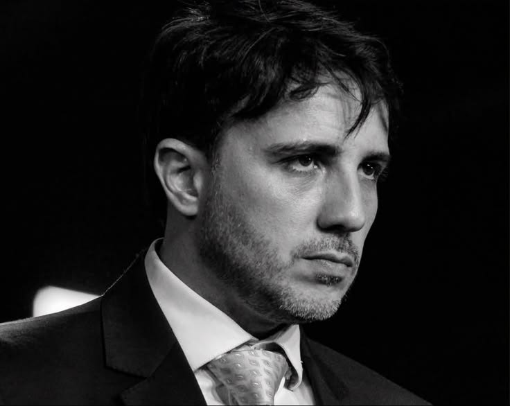
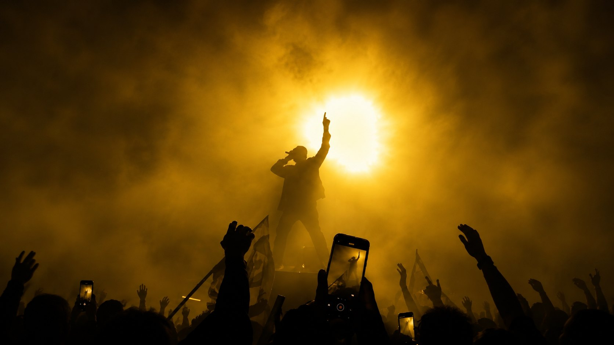
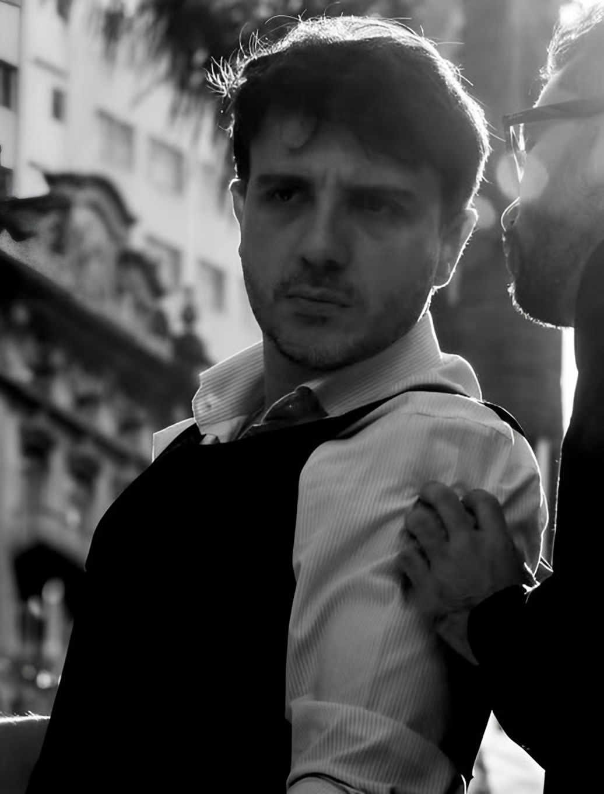
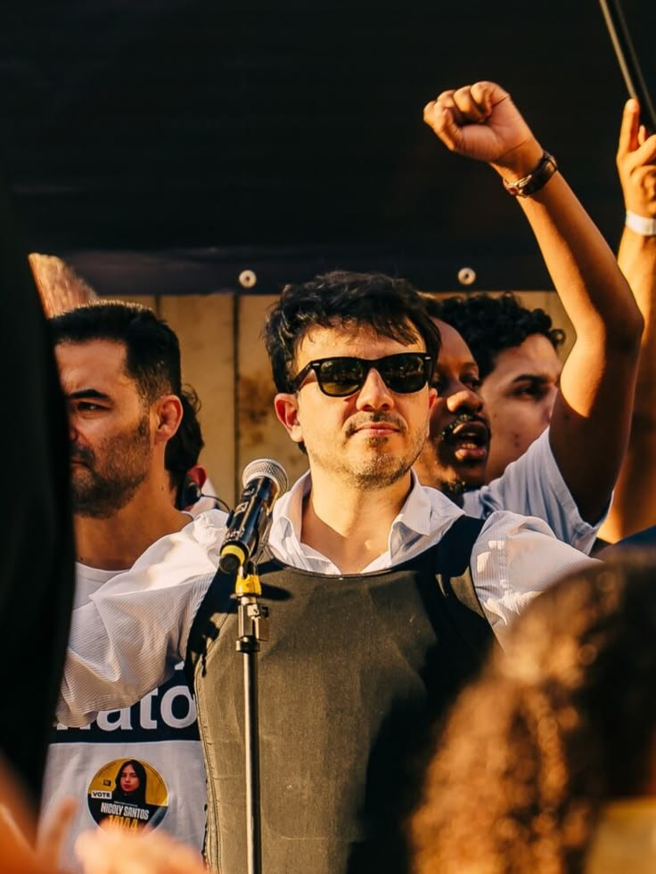
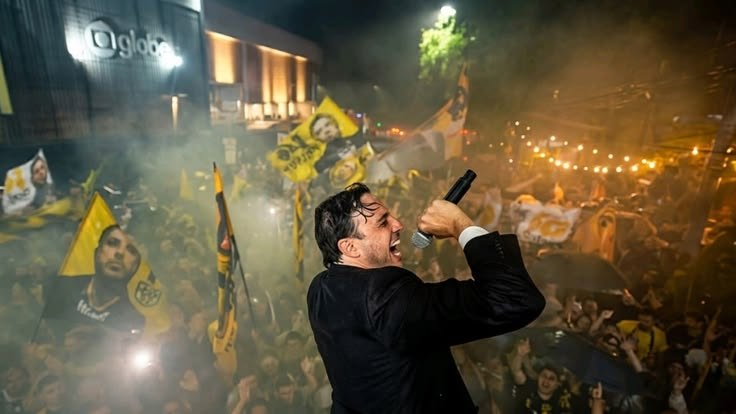
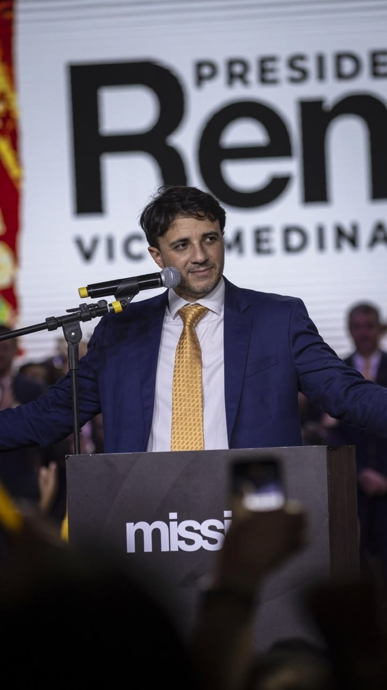
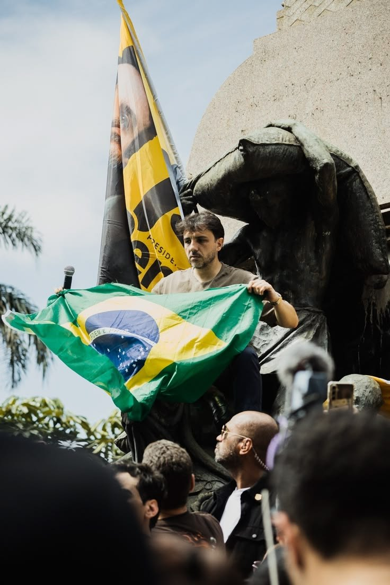
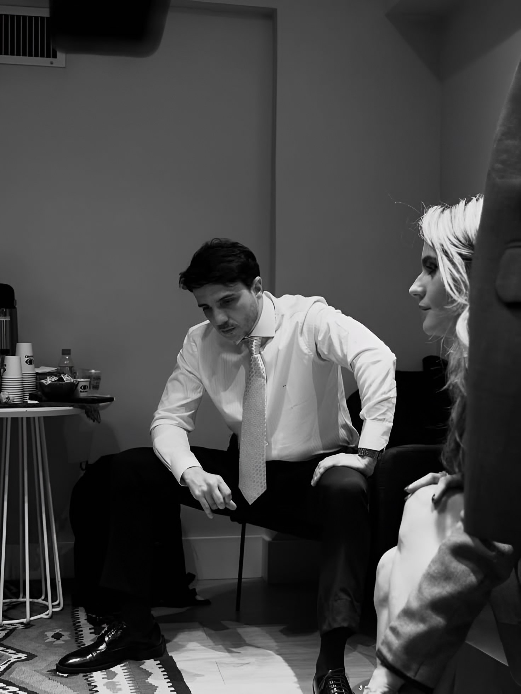
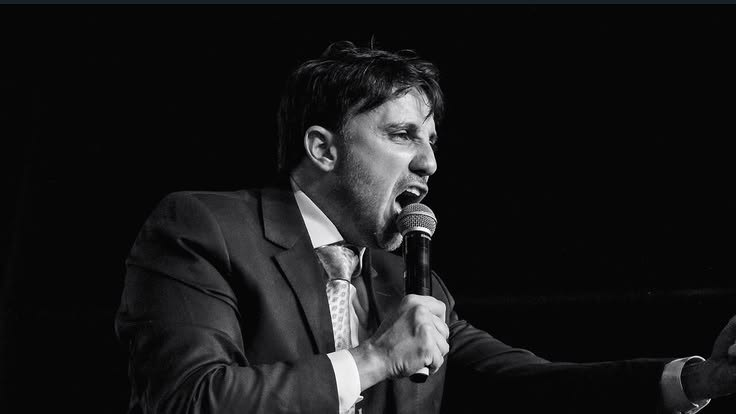
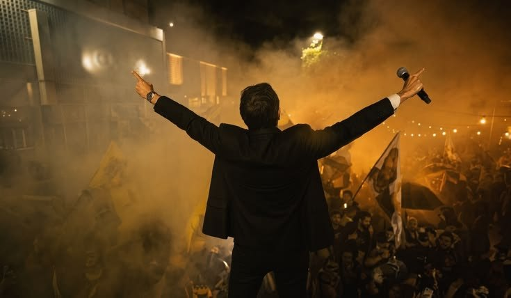

Sociologia — 2º ano
RenanSantos
Que Brasil este plano propõe?
Partido MissãoPresidência da RepúblicaEleições 2026
Uma análise do Livro Amarelo pela Sociologia
IntegrantesGabriela • Heitor • Nicolas • Sabrina

Diagnóstico do documento
Os problemas queorientam o projeto
- p. 9Desequilíbrio fiscal e dificuldades de gestão
- p. 11Crime organizado e insegurança
- p. 23Gargalos de infraestrutura e desenvolvimento
- p. 25Barreiras de acesso à saúde
- p. 30–31Baixa aprendizagem e violência escolar
O plano também abordaPacto federativo · gestão pública · cultura · indústria e terras raras · agricultura · política externa · desfavelização
Fonte: sumário (p. 2) e capítulos I, II, VI, VII e IX do PDF.



O documento analisado
Como o planose organiza
O PDF é um resumo executivo: reúne a abertura de cada capítulo do Livro Amarelo, que tem mais de 500 páginas.
- I
Estado NovoCap. I–IV
Reorganizar o Estado: ajuste fiscal, segurança, pacto federativo e gestão.
- II
Reformas de BaseCap. V–IX
Economia e serviços públicos: produtividade, infraestrutura, saúde, cultura e educação.
- III
País do FuturoCap. X–XIV
Projetos de longo prazo: Nordeste, terras raras, agro e IA, política externa e desfavelização.
Fonte: PDF, sumário (p. 2) e introdução (pp. 5–7).

Proposta 1 · Economia
Equilibrar as contas.Abrir espaçopara investir.
Problema apontado pelo plano
Contas públicas em desequilíbrio e despesas obrigatórias que crescem acima do limite. Segundo o documento, isso reduz a capacidade de investimento do Estado.
O que propõe
- Uma PEC de ajuste fiscal, a “PEC do Equilíbrio Fiscal”
- Revisão de benefícios fiscais e do abono salarial
- Fim dos supersalários e mudanças nas emendas parlamentares
Benefício pretendido
Criar espaço no orçamento para investimentos e tornar as contas públicas mais sustentáveis.
Fonte: PDF, pp. 9–10
Lógica proposta pelo plano · os efeitos dependem de aprovação e execução
- 1Rever despesas
- 2Reorganizar o orçamento
- 3Ampliar a capacidade de investimento
Proposta 1 · Economia · escolhas e impactos
O ajuste também envolveescolhas sociais
Aposentadorias e benefícios assistenciais
- O plano propõe
- Reajuste desvinculado do salário mínimo, corrigido pela inflação.
- O que significa
- Preserva o poder de compra, mas o benefício deixa de acompanhar aumentos reais do mínimo.
Pisos de saúde e educação
- O plano propõe
- Desvincular os pisos da receita.
- O que significa
- Muda a regra do gasto mínimo. Não extingue automaticamente o SUS nem a escola pública, e não zera esses gastos.
Argumento favorável
Mais flexibilidade para organizar o orçamento e controlar despesas.
Estimativa citada pelo plano para a PEC
R$ 1,1 trilhão até 2031Projeção do documento, não economia já realizada nem cálculo independente.
Fonte: PDF, pp. 9–10
Questão crítica
Como equilibrar as contas sem prejudicar a proteção social e a qualidade dos serviços públicos?
Proposta 2 · Segurança pública
Recuperar o controle.Com quais limites?
Problema apontado
Facções com poder territorial e financeiro; forças de segurança que pouco integram dados e ações.
Inteligência
Dados integrados e monitoramento de portos, aeroportos e fronteiras
Financiamento
Asfixia financeira das organizações criminosas
Território
Retomada de áreas e líderes isolados em presídios de segurança máxima
Também no capítulo
Direito Penal do Inimigo, Estado de Defesa e restrição de direitos de pessoas associadas a facções. O plano afirma que as medidas são constitucionais; isso não substitui uma avaliação jurídica independente.
Benefício pretendido
Reduzir a capacidade de atuação e de comando das facções.
Fonte: PDF, pp. 11–13
Questão de análise
Como garantir segurança, devido processo legal e proteção de inocentes?
Proposta 3 · Saúde
Prioridade paraquem mais precisa
Problema apontadoMeses de espera e informações do paciente espalhadas entre os serviços.
ENER
Fila organizada por risco clínico, vulnerabilidade e tempo de espera
PRONTO
Prontuário eletrônico integrado entre os serviços de saúde
Rede
Mais telemedicina e coordenação por centros regionais
Ilustração conceitual do grupo · não é uma etapa descrita no plano
- Avaliar
- Priorizar
- Encaminhar
- Acompanhar
Benefício pretendido
Atendimento mais coordenado e prioridade adequada aos casos de maior risco.
Questão de execução
Como financiar a integração e atender quem tem pouco acesso digital?
Fonte: PDF, pp. 25–26 · “SUS Fila Zero” é o nome do capítulo, não uma garantia de fim das filas.
Proposta 4 · Educação
Aprender mais.Ampliar oportunidades?
Problema apontadoBaixa aprendizagem (o plano cita cerca de 73% abaixo do mínimo em matemática no PISA 2022) e violência no ambiente escolar.
Aprendizagem
- Português e matemática como foco, com alfabetização pelo método fônico
- Práticas do Ceará levadas para o país
- Código disciplinar nacional e escolas civis-militares onde a situação é crítica
Benefício pretendidoMelhorar a aprendizagem e as condições de ensino.
Oportunidades
Cotas→Bolsas de mérito
Proposta para o ensino superior
Questão crítica
Como avaliar mérito sem ignorar desigualdades de origem?
Fonte: PDF, pp. 30–32

Relação com a Sociologia
Estado, direitos e desigualdade
-
Estado
Democracia e governabilidade
Governar depende do Congresso, dos estados, do Judiciário e da sociedade. O orçamento expressa escolhas sobre direitos, prioridades e quem recebe recursos.
No plano · slides 4–5A PEC fiscal redistribui o orçamento e, como a Lei Antifacção, depende de aprovação no Congresso.
-
Direitos
Contrato social
Hobbes, Locke e Rousseau explicam de formas diferentes o que torna o poder legítimo: proteção, direitos, vontade geral.
No plano · slide 6Combater facções preservando o devido processo legal.
-
Desigualdade
Pierre Bourdieu · capital cultural
Os alunos chegam à escola com conhecimentos e recursos culturais diferentes, e a escola valoriza mais os de alguns.
Leitura do grupo · slide 8Bolsas só por mérito podem premiar vantagens de origem.
Referência: BOURDIEU, Pierre; PASSERON, Jean-Claude. A reprodução. As relações com o plano são interpretação do grupo.


Análise crítica
Uma proposta tambémprecisa responder
O que ficou claro
- As prioridades: contas públicas, crime, saúde e educação
- Os instrumentos têm nome: PEC do Equilíbrio Fiscal, Lei Antifacção, ENER, PRONTO, código disciplinar
- A intenção de reorganizar o Estado e dar mais poder à União
O que exige mais detalhe
- Custo de cada proposta e fonte dos recursos (a PEC traz uma estimativa de economia, p. 10, sem ligá-la a cada gasto)
- Impacto do ajuste sobre aposentados, beneficiários e serviços de saúde e educação
- Cronograma e indicadores (há metas pontuais, como 80% de resolução na atenção primária, p. 26)
- Salvaguardas de direitos e efeitos sobre os mais pobres
Base: resumo executivo. O Livro Amarelo completo tem mais de 500 páginas (PDF, p. 5).
Pergunta ao candidato
Como financiar essas mudanças e demonstrar resultados sem ampliar desigualdades nem enfraquecer direitos?

Reflexão final
Conhecerpara avaliar
Por que é importante conhecer diretamente as propostas de um candidato antes de formar uma opinião sobre elas?
Porque a leitura direta permite comparar propostas, avaliar consequências e formar uma opinião fundamentada, além dos slogans e recortes das redes.
Fontes
- TSE — DivulgaCandContas (candidatura e plano registrado): divulgacandcontas.tse.jus.br/divulga/
- Plano consultado: PARTIDO MISSÃO. O Futuro é Glorioso — Resumo executivo do Livro Amarelo. Brasil, 2026. Sumário, p. 2; ajuste fiscal, pp. 9–10; segurança, pp. 11–13; saúde, pp. 25–26; educação, pp. 30–32.
- Sociologia: BOURDIEU, Pierre; PASSERON, Jean-Claude. A reprodução: elementos para uma teoria do sistema de ensino.
- Imagens: fornecidas pelo grupo; autoria não informada.